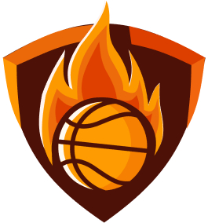

Home
O futebol é, sem dúvida, o esporte mais popular do mundo, atraindo milhões de fãs em todos os continentes. Originado na Inglaterra no século XIX, o futebol evoluiu para um fenômeno global, com ligas e competições em praticamente todos os países. O esporte é jogado entre duas equipes de onze jogadores cada, em um campo retangular com um gol em cada extremidade. O objetivo é marcar mais gols do que o adversário, conduzindo a bola com os pés e passando-a entre os jogadores. A Copa do Mundo da FIFA, realizada a cada quatro anos, é o evento mais prestigiado do futebol, reunindo as melhores seleções nacionais em um torneio que captura a atenção de bilhões de pessoas.
A simplicidade do futebol é uma das razões de sua popularidade: ele pode ser jogado em qualquer lugar, com apenas uma bola e espaço para correr. As regras são relativamente fáceis de aprender, o que permite que crianças e adultos de todas as idades e habilidades participem. O futebol também tem um papel importante na cultura e na identidade nacional de muitos países, sendo mais do que apenas um esporte para muitos de seus fãs.
O basquetebol é um esporte dinâmico e intenso, conhecido por seu ritmo acelerado e pela habilidade técnica necessária para driblar, passar e arremessar a bola. Criado em 1891 por James Naismith, o basquete rapidamente se tornou popular em escolas e universidades, antes de se expandir para um esporte profissional global. Cada equipe é composta por cinco jogadores, que competem para marcar pontos jogando a bola através de uma cesta elevada a 3,05 metros do chão. O jogo é dividido em quatro períodos, e a equipe com mais pontos ao final vence.
Além do jogo profissional, o basquete é amplamente praticado em ambientes amadores, em quadras de bairro e escolas. A National Basketball Association (NBA) dos Estados Unidos é a liga mais famosa do mundo, conhecida por apresentar jogadores talentosos e por sua influência na cultura pop. O basquete também faz parte dos Jogos Olímpicos, onde equipes de todo o mundo competem pelo ouro. A natureza do jogo incentiva o trabalho em equipe, a estratégia e a velocidade, tornando-o emocionante tanto para os jogadores quanto para os espectadores.
A natação é um esporte que combina resistência, técnica e velocidade. Ela pode ser praticada tanto em piscinas quanto em águas abertas, e é um dos esportes mais completos para o condicionamento físico. A natação tem suas origens nas atividades humanas de sobrevivência, mas evoluiu para um esporte competitivo no final do século XIX, com a criação de diferentes estilos de nado, como crawl, costas, peito e borboleta. Cada estilo requer um conjunto específico de habilidades e técnicas, tornando a natação um esporte diversificado e desafiador.
Competidores de natação participam de uma variedade de eventos, que variam em distância e estilo. As competições podem ser individuais ou de revezamento, onde equipes de nadadores se alternam para completar uma determinada distância. Além dos benefícios competitivos, a natação é amplamente reconhecida por seus benefícios à saúde. Ela melhora a capacidade cardiovascular, fortalece os músculos e é uma forma de exercício de baixo impacto, sendo adequada para pessoas de todas as idades e níveis de aptidão.
O tênis é um esporte que requer precisão, resistência e estratégia. Jogadores usam raquetes para bater uma bola sobre uma rede, tentando colocá-la no lado do adversário de forma que ele não consiga devolver. O tênis pode ser jogado em simples, com dois jogadores, ou em duplas, com quatro jogadores. A quadra de tênis pode ser feita de diferentes superfícies, como grama, saibro ou piso duro, cada uma oferecendo diferentes desafios e exigindo diferentes estilos de jogo.
Os torneios de tênis mais prestigiados são os Grand Slams, que incluem o Australian Open, Roland Garros, Wimbledon e o US Open. Esses torneios atraem os melhores jogadores do mundo e são assistidos por milhões de fãs. O tênis é um esporte que exige uma combinação de força, agilidade, coordenação e estratégia, tornando-o emocionante para assistir e desafiador para jogar. Além disso, o tênis é uma atividade que pode ser praticada durante toda a vida, oferecendo benefícios físicos e mentais para seus praticantes.
O vôlei é um esporte que se destaca pela sua dinâmica e pela necessidade de trabalho em equipe. Jogando em uma quadra dividida por uma rede alta, as equipes, compostas por seis jogadores cada, devem trabalhar juntas para passar a bola por cima da rede e fazê-la tocar o chão do lado adversário. O jogo é dividido em sets, e a equipe que vencer a maioria dos sets ganha a partida. A agilidade, a coordenação e a comunicação são fundamentais para o sucesso no vôlei.
O vôlei foi inventado em 1895 por William G. Morgan como uma alternativa menos intensa ao basquete. Desde então, evoluiu para um esporte competitivo com variações, como o vôlei de praia, que é jogado em uma quadra de areia com equipes de dois jogadores. O vôlei é um esporte olímpico desde 1964, e o vôlei de praia foi adicionado aos Jogos Olímpicos em 1996. Este esporte é conhecido por suas jogadas espetaculares, como saques potentes, bloqueios e cortadas, que requerem uma combinação de força, técnica e estratégia.
O judô é uma arte marcial e esporte de combate que se originou no Japão no final do século XIX. Criado por Jigoro Kano, o judô combina técnicas de projeção e controle no solo, e é conhecido tanto por sua eficácia em combate quanto por sua filosofia de respeito, disciplina e autodesenvolvimento. Os praticantes de judô, conhecidos como judocas, aprendem a utilizar a força e o movimento do adversário contra ele, empregando uma variedade de técnicas para desequilibrar e projetar o oponente ao chão.
O judô tornou-se um esporte olímpico em 1964 e é praticado em todo o mundo por pessoas de todas as idades. Além de ser uma forma eficaz de defesa pessoal, o judô é valorizado por seu aspecto educativo. Ele ensina valores como respeito, cortesia, coragem e autocontrole, e promove o desenvolvimento físico e mental. O judô é praticado em um tatame, onde os judocas usam um uniforme chamado judogi e competem em diferentes categorias de peso para garantir a equidade nas competições.